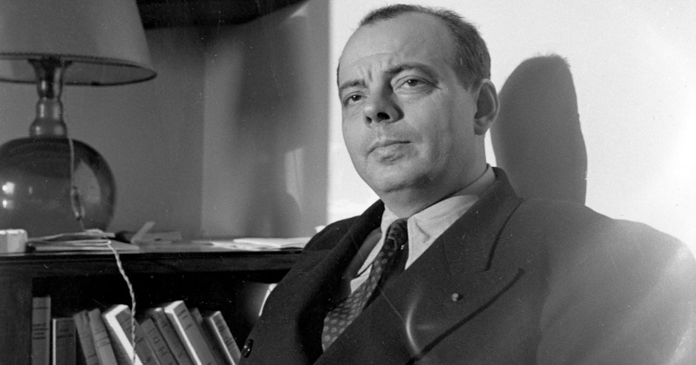

Antoine de Saint-Exupéry

(Lyon, 1900 - en el mar Tirreno, 1944) Novelista y aviador francés; sus experiencias como piloto fueron a menudo su fuente de inspiración. Tercero de los cinco hijos de una familia de la aristocracia (su padre tenía el título de vizconde), Antoine de Saint-Exupéry vivió una infancia feliz en las propiedades familiares, aunque perdió a su progenitor a la edad de cuatro años. Estuvo muy ligado a su madre, cuya sensibilidad y cultura lo marcaron profundamente, y con la que mantuvo una voluminosa correspondencia durante toda su vida.
Su interés por la mecánica y la aviación se remonta a la infancia: recibió el bautismo del aire en 1912, y la pasión de volar ya no lo abandonaría nunca. Después de seguir estudios clásicos en establecimientos católicos, preparó en París el concurso de entrada en la Escuela naval, pero no logró su objetivo y se inscribió en Bellas Artes. Pudo aprender el oficio de piloto durante su servicio militar en la aviación, pero la familia de su novia se opuso a que se incorporara al ejército del aire, por lo que se resignó a ejercer diversos oficios, al tiempo que frecuentaba los medios literarios.
El año 1926 marcó un giro decisivo en su vida: publicó su narración breve El aviador en la prestigiosa revista literaria Le Navire d'Argent, dirigida por Jean Prévost, y consiguió un contrato como piloto de línea para una sociedad de aviación. A partir de entonces, a cada escala del piloto correspondió una etapa de su producción literaria, alimentada con la experiencia. Mientras se desempeñaba como jefe de estación aérea en el Sahara español, escribió su primera novela, Correo del Sur (1928).
La escala siguiente fue Buenos Aires, al ser nombrado director de la Aeroposta Argentina, filial de la Aéropostale, donde tuvo la misión de organizar la red de América Latina. Tal es el marco de su segunda novela, Vuelo nocturno. En 1931, la bancarrota de la Aéropostale puso término a la era de los pioneros, pero Saint-Exupéry no dejó de volar como piloto de pruebas y efectuó varios intentos de récords, algunos de los cuales se saldaron con graves accidentes: en el desierto egipcio en 1935, y en Guatemala en 1938.
En los años treinta multiplicó sus actividades: cuadernos de invención, adaptaciones cinematográficas de Correo del Sur en 1937 y de Vuelo nocturno en 1939, numerosos viajes (a Moscú, a la España en guerra), reportajes y artículos para diversas revistas. Durante su convalescencia en Nueva York, después del accidente de Guatemala, reunió por consejo de André Gide los textos (en su mayor parte artículos ya publicados) que se convirtieron en Tierra de hombres (1939).
Durante la Segunda Guerra Mundial luchó con la aviación francesa en misiones peligrosas, en especial sobre Arras, en mayo de 1940. Con la caída de Francia marchó a Nueva York, donde contó esta experiencia en Piloto de guerra (1942). En Estados Unidos se mantuvo al margen de los compromisos partidistas, lo que le atrajo la hostilidad de los gaullistas. Su meditación se elevaba por encima de la historia inmediata: sin desconocer las amenazas que la época hacía pesar sobre el "respeto del hombre", como declara en Carta a un rehén (1943), optó por la parábola con El principito (1943), una fábula infantil de contenido lirismo e ilustrada por él mismo, que le dio fama mundial.
En El principito, el autor afirma haber conocido al singular personaje que da título al libro seis años atrás, en el desierto del Sahara, después de haber sufrido un accidente de avión, y nos cuenta su historia. El principito procedía de un asteroide tan pequeño que bastaba con desplazar un poco la silla hacia atrás para ver continuamente la puesta de sol. Un día brotó del suelo una rosa; el principito se enamoró de ella, pero no pudiendo soportar su orgullo y presunción, decidió abandonar el asteroide y emprendió un viaje que lo llevó a otros pequeños planetas. En cada uno de ellos vivía un único personaje que, como en seguida aprecia el lector, encarna algún defecto humano: la vanidad, el egoísmo, la ambición...
Finalmente, el principito llegó a la Tierra, donde descubrió, consternado, que su rosa no era la única del universo, y entabló amistad con un zorro, y después con el narrador. Los sutiles simbolismos y el desenlace de la historia sugieren el sentido del libro: una indagación sobre el amor y la amistad, sentimientos que, pese a su naturaleza incomprensible y los sufrimientos que pueden acarrear, se revelan como una necesidad ineludible y enriquecedora.
En 1943 pidió incorporarse a las fuerzas francesas en África del Norte, y a partir de entonces retomó las misiones desde Cerdeña y Córcega. En el transcurso de una de ellas, el 31 de julio de 1944, su avión desapareció en el Mediterráneo. Los cientos de páginas de La ciudadela, suma alegórica que permaneció inacabada, fueron publicadas póstumamente en 1948.
La prosa de Saint-Éxupery impresiona por un rigor en el que la desnudez retórica asegura la eficacia del relato de acción. Cercano a André Malraux por su conciencia de la aventura humana, a Jean Giono por su lirismo cósmico, a Georges Bernanos por su búsqueda del absoluto, Saint-Exupéry mostró siempre que el hombre no es más que lo que hace.